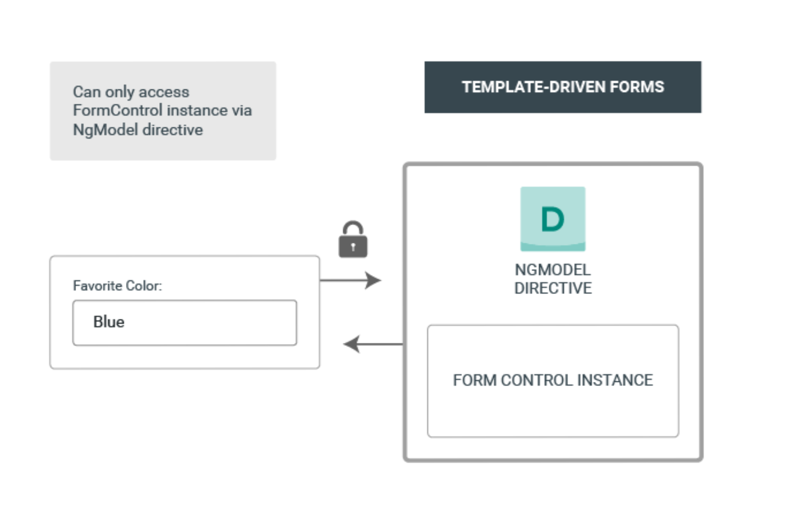
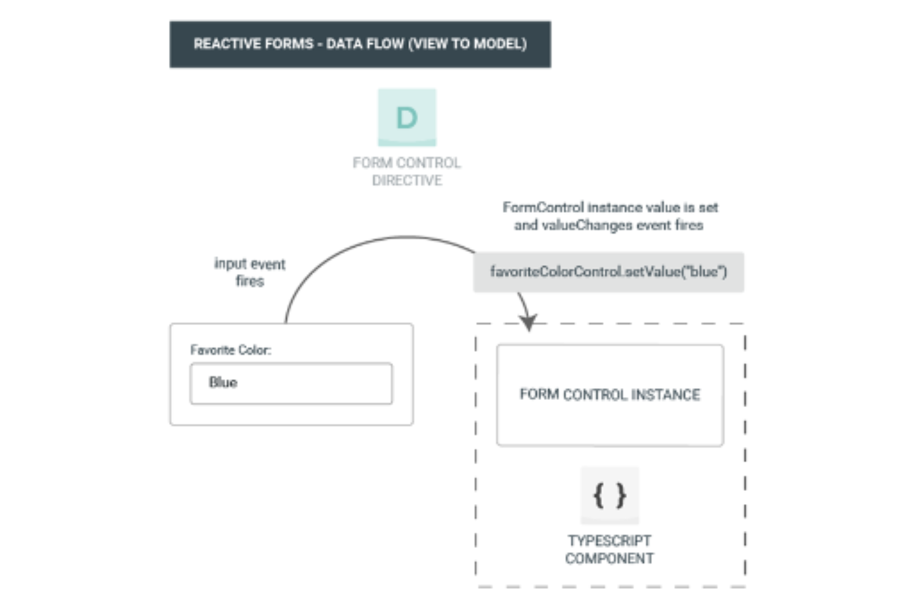
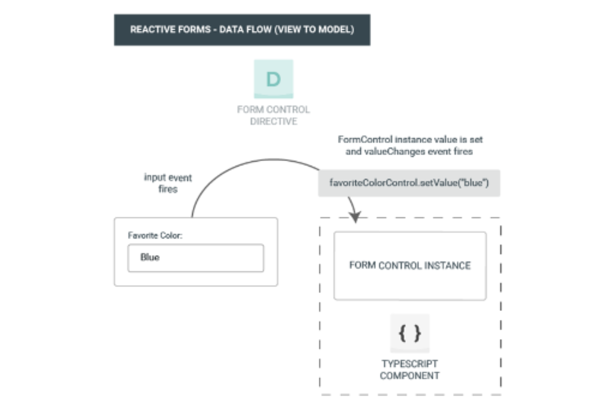
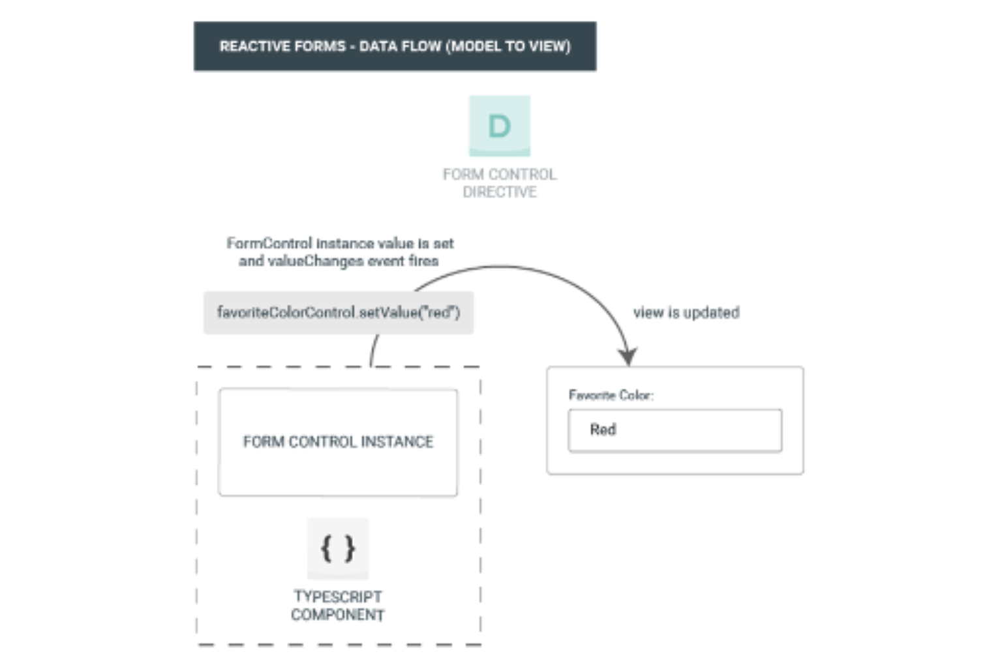
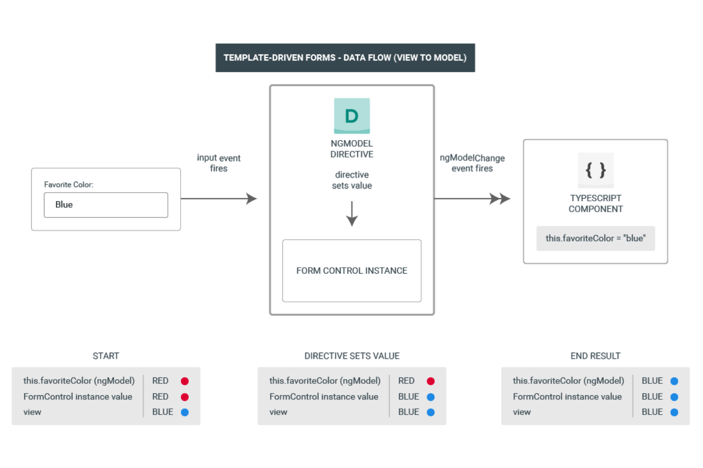
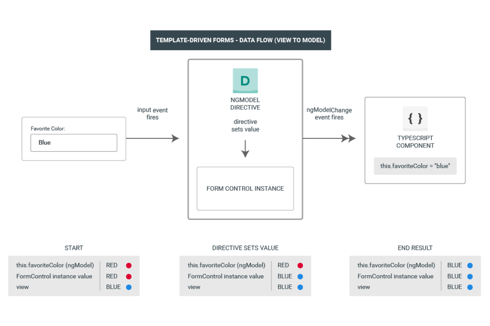
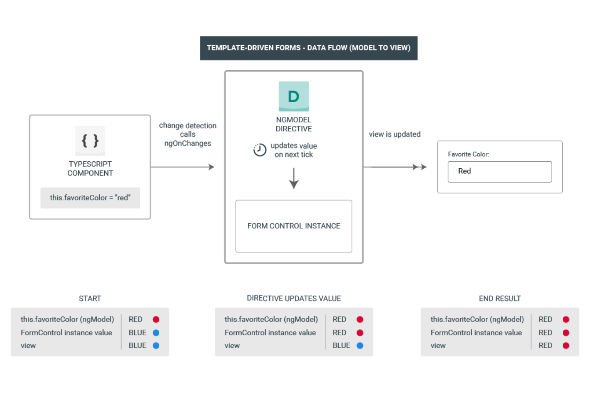
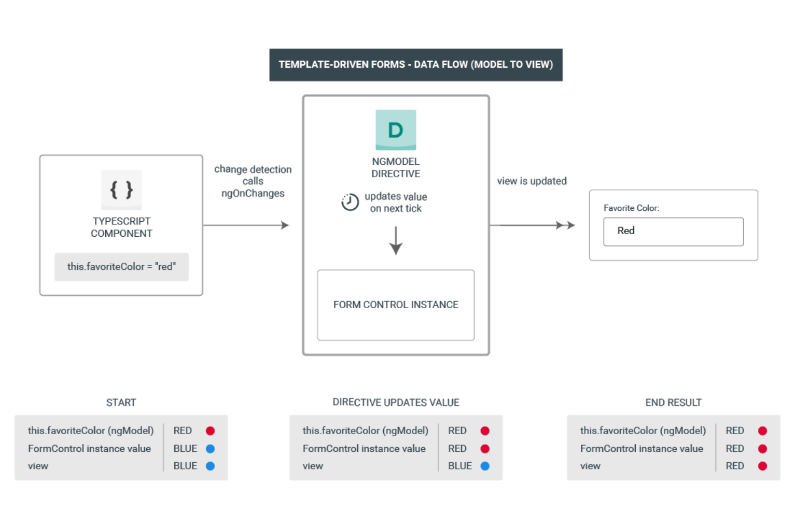

Forms
Lesson 04
SWAFE-01
Forms in Angular
Overview
- Handling user input with forms is the cornerstone of many web applications
- Angular provides two different approaches:
- Template-driven forms
- Reactive forms
- Reactive and template-driven forms process and manage data differently
Choosing an approach
- Reactive forms
- They provide a direct explicit access to the underlying forms object model
- More scalable, reuseable and testable
- Choose reactive forms if forms are a key part of the application
- Template-driven forms
- Easier to implement
- Choose if the requirements and logic can be managed solely in the template
Common form foundation classes
- Both reactive and template-driven forms are built on the following base classes
FormControltracks the value and validation status of an individual form controlFormGrouptracks the same values and status for a collection of form controlsFormArraytracks the same values and status for an array of form controlsControlValueAccessorcreates a bridge between Angular FormControl instances and native DOM elements
Data access


Data flow
Reactive (View to model)

Reactive (View to model)
Data flow
Reactive (Model to view)
Data flow
Template-driven (View to model)

Template-driven (View to model)
Data flow
Template-driven (Model to view)

Template-driven (Model to view)
Template-driven forms
Overview
- Control elements are bound to data properties
- Implicitly creates data model
- Template directives
NgForm–Creates a top-level instance and binds it to a form to track aggregate form value and validation statusNgModel—used to mark HTML elements as part of the data model (different context that two-way data binding from Lesson 01)NgModelGroup—represents a part of the form. Used to group elements together
- Template-driven forms rely on mutability of the data model
Template-driven form – class
Template-driven form – Template
Reactive forms
Overview
- The reactive directives come with
ReactiveFormsModule - Reactive directives
formGroup—binds to an instance ofFormGroupthat represents the entire form modelformGroupName—used when binding to nestedFormGroupobjectsformControl—used for individual controls without the need to create a model, but want Forms API featuresformControlName—used when binding to nestedFormControlobjects
- Define data model in component class
ReactiveForm – Class
Reactive – Template
ReactiveForm – Class
Dynamic forms
- Some use cases requires adding/removing controls based on input and/or state
- Use
FormArrayto manage any number of unnamed controls - A great option when the number of controls is not known in advance
- Use
push(control: AbstractControl)to add controls - Use
removeAt(index: number)to remove controls
- Use
- Bind in template with the
formArrayNamedirective
Dynamic form – Class
Dynamic form – Template
Updating form control values
- Reactive forms methods to change a form control's value programmatically
- There are two methods
setValue()—updates the values in the form data model. Must match the complete form date modelpatchValue()—updates selected properties in the form data model. Used when partially updating form data model
- Provide developers with the flexibility to change control values without user interaction
Form validation
Overview
- Improve overall data quality
- Accuracy-are users providing a usable value?
- Completeness-are they providing all values needed?
- Display useful messages to users
- Guide the user to input valid data
- Every time the value of a form control changes
- Angular runs validation
- Generates a list of validation errors
- Results in
VALIDorINVALID
- The class
Validatorsfrom Forms API provide built-in validators for the most common use cases
Built-in validators
min/max—value must be greater/less than or equal to the provided numberrequired—value must be non-emptyrequiredTrue—value must be trueemail—value must pass an email validation testminLength/maxLength—value must be greater/less than or equal to the provided number. Intented for types with numericlengthvaluepattern—value must match a regex patternnull validator—Validator that performs no operationcompose/composeAsync—compose multiple (async) validators into a single function that returns the union of the individual error maps
Template-driven form
Reactive form
Custom validators
- Apply application-specific validation
- Cross-field validation
- Validate values in two different form controls in a form
- Mutually incompatible–Select only one of two options
- Dependencies—Select only an option, if another one is selected
- Asynchronous validators
- Similar to thier synchronous counterparts
- They must return a
Promiseor anObservable - The observable must be finite (is has to complete at some point in time)
- Add directive for template-driven forms
- Create a
Directiveand implement theValidatorinterface
- Create a
Triggering validation
- Angular will trigger validation whenever a form control changes per default
- This can be overridden with
updateOnpropertychange—the value is checked as soon as it changes. Default settingblur—the value is checked when the control loses focussubmit—the value is checked when the form is submitted
- Can be applied to individual form controls or complete forms
Angular vs. HTML5 validation
- HTML5 offers native contraint validation
- Disabled by Angular by default
- Add
ngNativeValidateto the<form>element to use native validation in combination with the Angular-based validation
Key differences
- Setup of form model
- Template-driven Implicit, created by directives
- Reactive Explicit, created in component class
- Data model
- Template-driven Unstructured and mutable
- Reactive Structured and immutable
- Data flow
- Template-driven Asynchronous
- Reactive Synchronous
- Form validation
- Template-driven Directives
- Reactive Functions